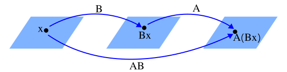

Chapter 2 - Matrix Algebra
2.1 - Matrix Operations
| Main: | Index |
| Previous: | 1.9 - The Matrix of a Linear Transformation |
| Next: | 2.2 - The Inverse of a Matrix |
Results
Many calculations can be simplified if we do the calculations directly on the matrix. If A is a m×n matrix, the scalar entry in row i and column j of A is denoted by $a_{ij}$ and is called the (i,j)-entry. Matrix when highlighting columns: $$ A = \big[\bs{a}_1 \;\; \cdots \;\; \bs{a}_j \;\; \cdots \;\; \bs{a}_n \big] $$ Matrix with the elements: $$ A = \begin{bmatrix*}[ccccc] a_{11} & \cdots & a_{1j} & \cdots & a_{1n} \\ \vdots & & \vdots & & \vdots \\ a_{i1} & \cdots & a_{ij} & \cdots & a_{in} \\ \vdots & & \vdots & & \vdots \\ a_{m1} & \cdots & a_{mj} & \cdots & a_{mn} \end{bmatrix*} $$The diagonal entries $a_{11}, a_{22}, \ldots$ form the main diagonal. A diagonal matrix is a square matrix whose nondiagonal elements are nonzero: $$ \begin{bmatrix*}[rrr] 3 & 0 & 0 \\ 0 & 2 & 0 \\ 0 & 0 & 1 \end{bmatrix*}. $$ An important example of this is the identity matrix, which is a diagonal matrix where all elements are 1 and are referred to as $I_n$. For example, $I_3$: $$ \begin{bmatrix*}[rrr] 1 & 0 & 0 \\ 0 & 1 & 0 \\ 0 & 0 & 1 \end{bmatrix*}. $$ Finally we have the zero matrix, where all elements are 0. Denoted by 0 or O: $$ \begin{bmatrix*}[rrr] 0 & 0 & 0 \\ 0 & 0 & 0 \\ 0 & 0 & 0 \end{bmatrix*}. $$
Sums and Scalar Multiples
The vector calculations can be extended to matrices. We say that two matrcies are equal if they have the same dimension. When adding two matrices, we simply add each corresponding entry in the matrix. From this definition, it only applies when the matrices are equal. We scale a matrix by muliplying with some scalar $r$. This is then multiplied to every entry of A.Theorem 2.1
Let A, B and C be matrices of equal size, and let r and s
be some scalars.
(a) $A + B = B + A$
(b) $(A + B) + C = A + (B + C)$
(c) $A + O = A$
(d) $r(A + B) = rA + rB$
(e) $(r + s)A = rA + sA$
(f) $r(sA) = (rs)A$
(a) $A + B = B + A$
(b) $(A + B) + C = A + (B + C)$
(c) $A + O = A$
(d) $r(A + B) = rA + rB$
(e) $(r + s)A = rA + sA$
(f) $r(sA) = (rs)A$
Matrix Multiplication
When a matrix B is multiplied with a vector x, it is transformed into another vector Bx. If this vector is multiplied by another matrix A, the result is a third vector A(Bx).
The vector is produced by a composition of mappings. We can represent this as a single matrix AB.
If A is an m×n matrix, B is an n×p matrix, and x is some vector in ℝp, we denote the columns of B as bj and the entries of x by xj. Then: $$ B\bs{x} = x_1\bs{b}_1 + \ldots + x_p\bs{b}_p. $$ By the linearity of multiplication by A; $$ \begin{align*} A(B\bs{x}) &= A\Big(x_1\bs{b}_1 + \ldots + x_p\bs{b}_p\Big)\\ &\\ &= A(x_1\bs{b}_1) + \ldots + A(x_p\bs{b}_p) \\ &\\ &= x_1A\bs{b}_1 + \ldots + x_pA\bs{b}_p \end{align*} $$ So, the vector A(Bx) is a linear combination of the vectors Abj using the entries of x as weights. Expressing as vectors: $$ A(B\bs{x}) = \big[A\bs{b}_1 \;\; \ldots \;\; A\bs{b}_p\big]\bs{x} $$ Or: $$ AB = \big[A\bs{b}_1 \;\; \ldots \;\; A\bs{b}_p\big] $$
Example
We will look at this in a more concrete setting. Let A be a 4×3 matrix, B a 3×2 matrix, and x a vector in ℝ2. Specifically: $$ A = \begin{bmatrix*}[rrr] 3 & 1 & 0 \\ 1 & 2 & 0 \\ 1 & 0 & 2 \\ 2 & 2 & 1 \end{bmatrix*},\qquad B = \begin{bmatrix*}[rr] 3 & 1 \\ 2 & 2 \\ 1 & 2 \end{bmatrix*},\qquad \bs{x} = \begin{bmatrix*}[r] 3 \\ 2 \end{bmatrix*} $$ Calculating the two vectors individually. First Bx: $$ \begin{bmatrix*}[rr] 3 & 1 \\ 2 & 2 \\ 1 & 2 \end{bmatrix*} \begin{bmatrix*}[r] 3 \\ 2 \end{bmatrix*} = \begin{bmatrix*}[rcr] (3)(3) &+& (1)(2) \\ (2)(3) &+& (2)(2) \\ (1)(3) &+& (2)(2) \end{bmatrix*} = \begin{bmatrix*}[c] 9 + 2 \\ 6 + 4 \\ 3 + 4 \end{bmatrix*} = \begin{bmatrix*}[c] 11 \\ 10 \\ 7 \end{bmatrix*} $$ Now, A(Bx): $$ \begin{bmatrix*}[rrr] 3 & 1 & 0 \\ 1 & 2 & 0 \\ 1 & 0 & 2 \\ 2 & 2 & 1 \end{bmatrix*} \begin{bmatrix*}[c] 11 \\ 10 \\ 7 \end{bmatrix*} = \begin{bmatrix*}[rcrcr] (3)(11) &+& (1)(10) &+& (0)(7) \\ (1)(11) &+& (2)(10) &+& (0)(7) \\ (1)(11) &+& (0)(10) &+& (2)(7) \\ (2)(11) &+& (2)(10) &+& (1)(7) \end{bmatrix*} = \begin{bmatrix*}[c] 33 + 10 + 0 \\ 11 + 20 + 0 \\ 11 + 0 + 14 \\ 22 + 20 + 7 \end{bmatrix*} = \begin{bmatrix*}[c] 43 \\ 31 \\ 25 \\ 49 \end{bmatrix*} $$ Next, we calculate AB as described. The matrix multiplication is: (4×3)×(3×2) = 4×2. The inner dimensions disappear, so the resulting matrix has 4 rows and 2 columns. Calculating each column of AB: $$ A\bs{b}_1 = \begin{bmatrix*}[rrr] 3 & 1 & 0 \\ 1 & 2 & 0 \\ 1 & 0 & 2 \\ 2 & 2 & 1 \end{bmatrix*} \begin{bmatrix*}[c] 3 \\ 2 \\ 1 \end{bmatrix*} = \begin{bmatrix*}[rcrcr] (3)(3) &+& (1)(2) &+& (0)(1) \\ (1)(3) &+& (2)(2) &+& (0)(1) \\ (1)(3) &+& (0)(2) &+& (2)(1) \\ (2)(3) &+& (2)(2) &+& (1)(1) \end{bmatrix*} = \begin{bmatrix*}[c] 9 + 2 + 0 \\ 3 + 4 + 0 \\ 3 + 0 + 2 \\ 6 + 4 + 1 \end{bmatrix*} = \begin{bmatrix*}[c] 11 \\ 7 \\ 5 \\ 11 \end{bmatrix*} $$ $$ A\bs{b}_2 = \begin{bmatrix*}[rrr] 3 & 1 & 0 \\ 1 & 2 & 0 \\ 1 & 0 & 2 \\ 2 & 2 & 1 \end{bmatrix*} \begin{bmatrix*}[c] 1 \\ 2 \\ 2 \end{bmatrix*} = \begin{bmatrix*}[rcrcr] (3)(1) &+& (1)(2) &+& (0)(2) \\ (1)(1) &+& (2)(2) &+& (0)(2) \\ (1)(1) &+& (0)(2) &+& (2)(2) \\ (2)(1) &+& (2)(2) &+& (1)(2) \end{bmatrix*} = \begin{bmatrix*}[c] 3 + 2 + 0 \\ 1 + 4 + 0 \\ 1 + 0 + 4 \\ 2 + 4 + 2 \end{bmatrix*} = \begin{bmatrix*}[c] 5 \\ 5 \\ 5 \\ 8 \end{bmatrix*} $$ Now we have AB: $$ AB = \big[A\bs{b}_1 \;\; A\bs{b}_2 \big] = \begin{bmatrix*}[rr] 11 & 5 \\ 7 & 5 \\ 5 & 5 \\ 11 & 8 \end{bmatrix*} $$ Verifying: $$ AB\bs{x} = \begin{bmatrix*}[rr] 11 & 5 \\ 7 & 5 \\ 5 & 5 \\ 11 & 8 \end{bmatrix*} \begin{bmatrix*}[r] 3 \\ 2 \end{bmatrix*} = \begin{bmatrix*}[rcr] (11)(3) &+& (5)(2) \\ (7)(3) &+& (5)(2) \\ (5)(3) &+& (5)(2) \\ (11)(3) &+& (8)(2) \end{bmatrix*} = \begin{bmatrix*}[c] 33 + 10 \\ 21 + 10 \\ 15 + 10 \\ 33 + 16 \end{bmatrix*} = \begin{bmatrix*}[c] 43 \\ 31 \\ 25 \\ 49 \end{bmatrix*} $$ which is the same as A(Bx).
Definition
If A is an m×n matrix, and B is an n×p matrix with columns bj,
then the product AB is the m×p matrix whose columns are Abj. That is,
$$
AB =
A\big[\bs{b}_1 \;\; \ldots \;\; \bs{b}_p\big] =
\big[A\bs{b}_1 \;\; \ldots \;\; A\bs{b}_p\big]
$$
As we can see, the columns of AB is a liner combintation of the columns of A using weights from the corresponding column if B.
Row-Column Rule for Computing AB
If the product AB is defined, then the entry in row i and column j of AB
is the sum of the products of corresponding entries from row i of A and
column j of B. If $(AB)_{ij}$ denotes the (i, j)-entry in AB, and if
A is m×n matrix, then:
$$
(AB)_{ij} = a_{i1}b_{1j} + a_{i2}b_{2j} + \ldots + a_{in}b_{nj}.
$$
Example
Muliplying a 2×2 matrix with a 2×3 matrix. Finding the entry in AB positioned in row 1 and column 3. According to the formula above: $$ (AB)_{13} = a_{11}b_{13} + a_{12}b_{23} $$ $$ \begin{bmatrix*}[rr] \color{red}{2} & \color{red}{3} \\ 1 & -5 \end{bmatrix*} \begin{bmatrix*}[rrr] 4 & 3 & \color{blue}{6} \\ 1 & -2 & \color{blue}{3} \end{bmatrix*} = \begin{bmatrix*}[rrc] \square& \square& (\color{red}{2}\color{black}{)(}\color{blue}{6}\color{black}{) + (}\color{red}{3}\color{black}{)(}\color{blue}{3}) \\ \square& \square& \square \end{bmatrix*} = \begin{bmatrix*}[rrc] \square& \square& 12 + 9 \\ \square& \square& \square \end{bmatrix*} = \begin{bmatrix*}[rrc] \square& \square& 21 \\ \square& \square& \square \end{bmatrix*} $$ And for finding row 2 and column 2 of AB: $$ (AB)_{22} = a_{21}b_{12} + a_{22}b_{22} $$ $$ \begin{bmatrix*}[rr] 2 & 3 \\ \color{red}{1} & \color{red}{-5} \end{bmatrix*} \begin{bmatrix*}[rrr] 4 & \color{blue}{3} & 6\\ 1 & \color{blue}{-2} & 3 \end{bmatrix*} = \begin{bmatrix*}[rcc] \square& \square& 21 \\ \square& (\color{red}{1}\color{black}{)(}\color{blue}{3}\color{black}{) + (}\color{red}{-5}\color{black}{)(}\color{blue}{-2}) & \square \end{bmatrix*} = \begin{bmatrix*}[rcc] \square& \square& 21 \\ \square& 3 + 10& \square \end{bmatrix*} = \begin{bmatrix*}[rcc] \square& \square& 21 \\ \square& 13 & \square \end{bmatrix*} $$ The cell in AB determines what row from A we use, and what column in B.
From the row-column rule, we can make the following observation: $$ \text{row}_i(AB) = \text{row}_i(A)\cdot B $$
Properties of Matrix Multiplication
Theorem 2.2
Let A be an m×n matrix and let B and C have sizes for which the indicated
sums and products are defined. $I_m$ is the m×m identity matrix.
| (a) | $(AB)C = A(BC)$ | (Associative law of multiplication) | |
| (b) | $A(B + C) = AB + AC$ | (Left distributive law) | |
| (c) | $(B + C)A = BA + CA$ | (Right distributive law) | |
| (d) | $r(AB) = (rA)B = A(rB)$ | (For any scalar r) | |
| (e) | $I_mA = A = AI_n$ | (Identity for matrix multiplication) | |
Some warnings. The left/right multiplication properties are important. In matrix multiplication AB is generally not the same as BA. We cannot cancel matrices either. If AB = AC, then it is not generally true that B = C. And finally, if AB = O, then we can't conclude that A or B is equal to O.
Powers of a Matrix
If A is an n×n matrix, and if k is a positive integer, then Ak denotes the of k copies of A: $$ A^k = \underbrace{A\;\cdots\; A}_{k\;\text{times}} $$The Transpose of a Matrix
Given an m×n matrix A, the transpose of A is the n×m matrix, denoted by $A^T$, whose columns are formed from the corresponding rows of A. Examples: $$ A = \begin{bmatrix*}[rr] a & b \\ c & d \end{bmatrix*},\quad B = \begin{bmatrix*}[rr] -5 & 2 \\ 1 & -3 \\ 0 & 4 \end{bmatrix*} ,\quad C = \begin{bmatrix*}[rrrr] 1 & 1 & 1 & 1 \\ -3 & 5 & -2 & 7 \end{bmatrix*} $$ $$ A^T = \begin{bmatrix*}[rr] a & c \\ b & d \end{bmatrix*},\quad B^T = \begin{bmatrix*}[rrr] -5 & 1 & 0 \\ 2 & -3 & 4 \\ \end{bmatrix*} ,\quad C^T = \begin{bmatrix*}[rr] 1 & -3 \\ 1 & 5 \\ 1 & -2 \\ 1 & 7 \\ \end{bmatrix*} $$ Informally, the transpose is a matter of "flipping" the matrix around the diagonal.Theorem 2.3
Let A and B denote matrices whose size are appropriate for the following
sums and products.
| (a) | $(A^T)^T = A$ |
| (b) | $(A + B)^T = A^T + B^T$ |
| (c) | $(rA)^T = rA^T,\qquad \forall r\in\R$ |
| (d) | $(AB)^T = B^TA^T$ |
The last property carries over to several multiplications. We just reverse the order. $$ (ABCD)^T = D^TC^TB^TA^T $$
Exercise 1
Perform the given calculations for the following matrices: $$ A = \begin{bmatrix*}[rrr] 2 & 0 & -1 \\ 4 & -5 & 2 \end{bmatrix*},\quad B = \begin{bmatrix*}[rrr] 7 & -5 & 1 \\ 1 & -4 & -3 \end{bmatrix*},\quad C = \begin{bmatrix*}[rr] 1 & 2 \\ -2 & 1 \end{bmatrix*},\quad D = \begin{bmatrix*}[rr] 3 & 5 \\ -1 & 4 \end{bmatrix*} $$ Calculate: $$ -2A,\quad B - 2A,\quad AC,\quad CD $$Answer
-2A. Simply multiplying each element in A with -2. $$ -2A = \begin{bmatrix*}[rrr] -4 & 0 & 2 \\ -8 & 10 & -4 \end{bmatrix*} $$ B - 2A = B + (-2A) $$ B + (-2A) = \begin{bmatrix*}[rrr] 7 & -5 & 1 \\ 1 & -4 & -3 \end{bmatrix*} + \begin{bmatrix*}[rrr] -4 & 0 & 2 \\ -8 & 10 & -4 \end{bmatrix*} = \begin{bmatrix*}[rrr] 3 & -5 & 3 \\ -7 & 6 & -7 \end{bmatrix*} $$ AC. This is not defined since A is a 2×3 and C is a 2×2 matrix. The rows of A and columns of C do not match, so the matrix multiplication is not defined.
CD. $$ CD = \begin{bmatrix*}[rr] 1 & 2 \\ -2 & 1 \end{bmatrix*} \begin{bmatrix*}[rr] 3 & 5 \\ -1 & 4 \end{bmatrix*} = C[\bs{d}_1\;\bs{d}_2] = [C\bs{d}_1\;C\bs{d}_2] $$ Intermediate calculations: $$ C\bs{d}_1 = \begin{bmatrix*}[rr] 1 & 2 \\ -2 & 1 \end{bmatrix*} \begin{bmatrix*}[rr] 3 \\ -1 \end{bmatrix*} = \begin{bmatrix*}[rcr] (1)(3) &+& (2)(-1) \\ (-2)(3) &+& (1)(-1) \end{bmatrix*} = \begin{bmatrix*}[c] 3 - 2 \\ -6 - 1 \end{bmatrix*} = \begin{bmatrix*}[r] 1 \\ -7 \end{bmatrix*} $$ $$ C\bs{d}_2 = \begin{bmatrix*}[rr] 1 & 2 \\ -2 & 1 \end{bmatrix*} \begin{bmatrix*}[rr] 5 \\ 4 \end{bmatrix*} = \begin{bmatrix*}[rcr] (1)(5) &+& (2)(4) \\ (-2)(5) &+& (1)(4) \end{bmatrix*} = \begin{bmatrix*}[c] 5 + 8 \\ -10 + 4 \end{bmatrix*} = \begin{bmatrix*}[r] 13 \\ -6 \end{bmatrix*} $$ So: $$ CD = \begin{bmatrix*}[rr] 1 & 13 \\ -7 & -6 \end{bmatrix*} $$
■
Exercise 5
Compute the product AB in two ways: (a) by the definition where Abj are computed seperately, and (b) by the row-column rule. $$ A = \begin{bmatrix*}[rr] -1 & 2 \\ 5 & 4 \\ 2 & -3 \end{bmatrix*} ,\quad B = \begin{bmatrix*}[rr] 3 & -2 \\ -2 & 1 \end{bmatrix*} $$Answer
Intermediate calculations: $$ A\bs{b}_1 = \begin{bmatrix*}[rr] -1 & 2 \\ 5 & 4 \\ 2 & -3 \end{bmatrix*} \begin{bmatrix*}[r] 3 \\ -2 \end{bmatrix*} = \begin{bmatrix*}[rcr] (-1)(3) &+& (2)(-2) \\ (5)(3) &+& (4)(-2) \\ (2)(3) &+& (-3)(-2) \end{bmatrix*} = \begin{bmatrix*}[c] -3 - 4 \\ 15 -8 \\ 6 + 6 \end{bmatrix*} = \begin{bmatrix*}[r] -7 \\ 7 \\ 12 \end{bmatrix*} $$ $$ A\bs{b}_2 = \begin{bmatrix*}[rr] -1 & 2 \\ 5 & 4 \\ 2 & -3 \end{bmatrix*} \begin{bmatrix*}[r] -2 \\ 1 \end{bmatrix*} = \begin{bmatrix*}[rcr] (-1)(-2) &+& (2)(1) \\ (5)(-2) &+& (4)(1) \\ (2)(-2) &+& (-3)(1) \end{bmatrix*} = \begin{bmatrix*}[r] 2 + 2\\ -10 + 4\\ -4 - 3 \end{bmatrix*} = \begin{bmatrix*}[r] 4\\ -6\\ -7 \end{bmatrix*} $$ So: $$ AB = \begin{bmatrix*}[rr] -7 & 4\\ 7 & -6\\ 12 & -7 \end{bmatrix*} $$ The calculations using the row-column rule will be the same calculations just set in a single matrix.
■
Exercise 10
Let $$ A = \begin{bmatrix*}[rr] 2 & -3 \\ -4 & 6 \end{bmatrix*} ,\quad B = \begin{bmatrix*}[rr] 8 & 4 \\ 5 & 5 \end{bmatrix*} ,\quad C = \begin{bmatrix*}[rr] 5 & -2 \\ 3 & 1 \end{bmatrix*}, $$ verify that AB = AC, and yet B≠C.Answer
Skipping all the intermediate calculations. $$ AB = AC = \begin{bmatrix*}[rr] 1 & -7 \\ -2 & 14 \end{bmatrix*} $$
■
Exercise 15
Let A, B and C be arbitrary matrices where the indicated sums and products are defined. Verifying statements. Answer True or False and justify the answer.(a) If A and B are 2×2 matrices with columns aj and bj, then A = [a1b1 a2b2]
Answer: False. Multiplying two columns would produce a scalar, so this result would be a 2×1 matrix (vector).
(b) Each column of AB is a linear combination of the columns of B using weights from the corresponding column of A.
Answer: False. The reverse is true: $$ AB = A[\bs{b}_1 \; \cdots \; \bs{b}_n] = [A\bs{b}_1 \; \cdots \; A\bs{b}_n] $$ Here we see that the columns of AB is a linear combination of the columns of A, using the columns of B as weights.
(c) AB + AC = A(B + C).
Answer: True. This is Theorem 2.2 (b) (switched).
(d) AT + BT = (A + B)T.
Answer: True. This is Theorem 2.3 (b) (switched).
(e) The transpose of a product of matrices equals the product of their transposes in the same order.
Answer: False. It equals their product in reversed order.
■
Exercise 16
Let A, B and C be arbitrary matrices where the indicated sums and products are defined. Verifying statements. Answer True or False and justify the answer.(a) If A and B are 3×3 matrices and B = [b1 b2 b3] then AB = [Ab1 Ab2 Ab3].
Answer: True. This is basically the definition of matrix multiplication.
(b) The second row of AB is the second row of A multiplied on the right by B.
Answer: True. This is mentioned after the introduction of the row-column rule.
(c) (AB)C = (AC)B.
Answer: False. This changes the order of the matrix multiplications. The correct statement would be (AB)C = A(BC).
(d) (AB)T = ATBT.
Answer: False. The order of matrices should be reversed. As it stands, this operation is in general not even defined.
(e) The tranpose of a sum of matrices equals the sum of their transposes.
Answer: True. This is the general statement of Theorem 2.3 (b).
■
Exercise 23
Suppose $CA = I_n$. Show that the equation Ax = 0 only has the trivial solution. Explain why A cannot have more columns than rows.Answer
Multiplying with x will give - due to the property of the identity matrix: $$ CA\bs{x} = I_n\bs{x} = \bs{x} $$ Assume now that x≠0 and that Ax=0, i.e. that Ax = 0 has some nontrivial solution x. From our equation above, we have shown that: $$ CA\bs{x} = I_n\bs{x} = \bs{x} \not= \bs{0}. $$ However, using that Ax=0 and Theorem 2.2 property (a): $$ CA\bs{x} = C(A\bs{x}) = C\bs{0} = \bs{0}. $$ This is a contradiction! Hence, if x≠0 then it must follow that Ax≠0.
Since Ax=0 only has the trivial solution, then by Theorem 1.2 (extended result in section 1.5), there are no free variables. This means that A has a pivot entry in every column, i.e. it has n pivot columns. As shown in exercise 40 in section 1.7, it must then have more rows than columns.
■
Exercise 25
Suppose A is an m×n matrix and there exists n×m matrices C and D such that $CA = I_n$ and $AD = I_m$. Prove that m = n and C = D.[Hint: Think about the product CAD].
Answer
(Note: this is a reference to the inverted matrix). The statement in exercise 22 (not done) shows that if B is linearly dependent, then AB is linearly dependent. The converse of this statement is: if AB is linearly independent that means that B is linearly independent. In this exercise, CA = In is linearly independent, and so A is linearly independent. This means it has pivot entries in each column, which means we can conclude that m≥n.
By the same general argument, we can conclude that D is linearly independent, and so we can conclude n≥m. Combining these statements, we must have m = n.
From this we can determine that $CA = I_n$ and $AD = I_n$. Using the hint: $$ \begin{align*} CA &= I_n \\ CAD &= I_nD \\ CAD &= D \\ C(AD) &= D \\ CI_n &= D \\ C &= D \end{align*} $$
■